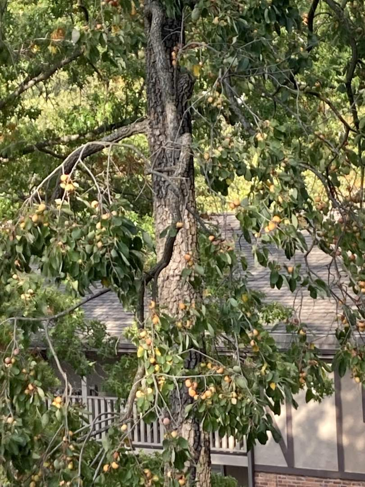
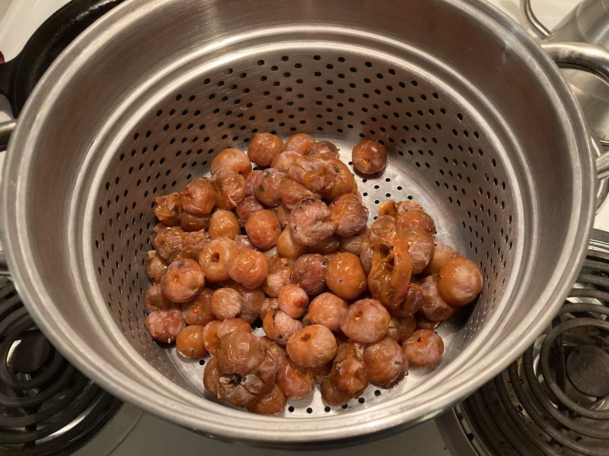
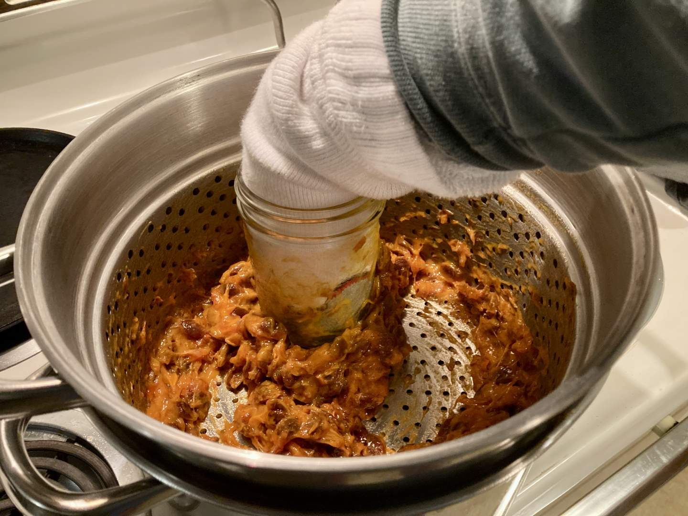
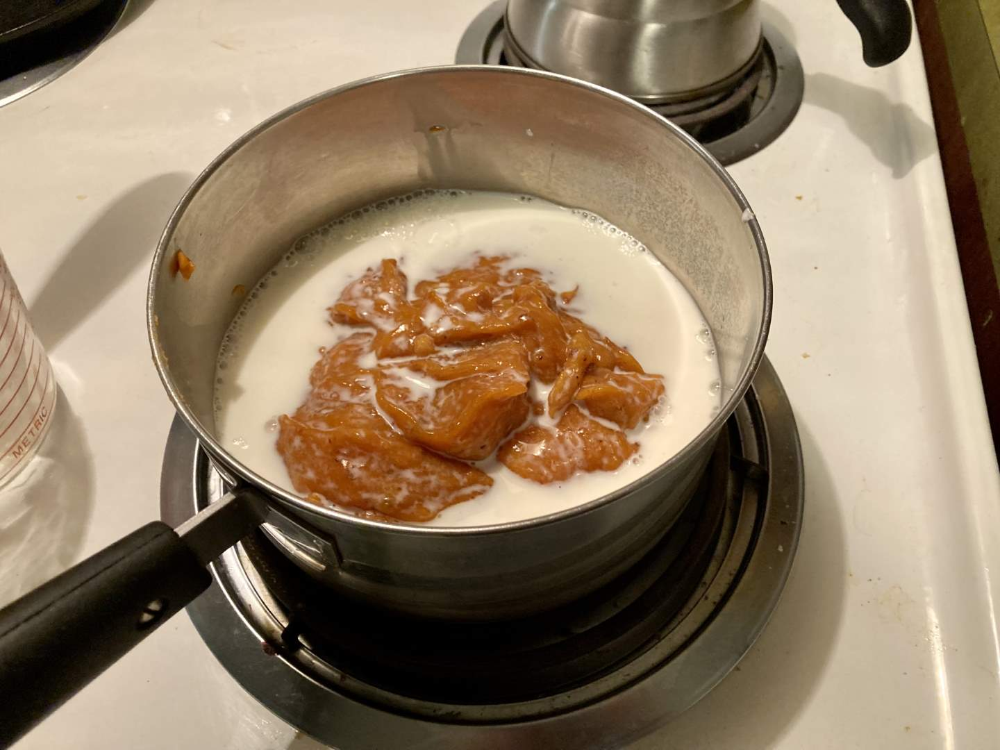
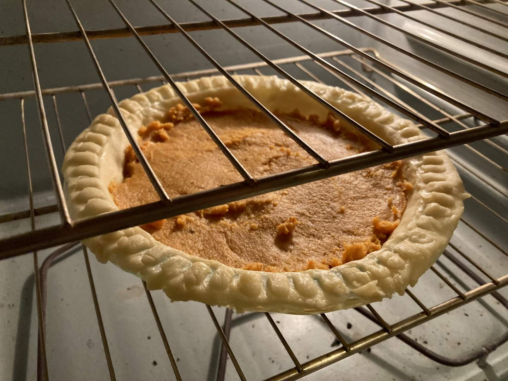
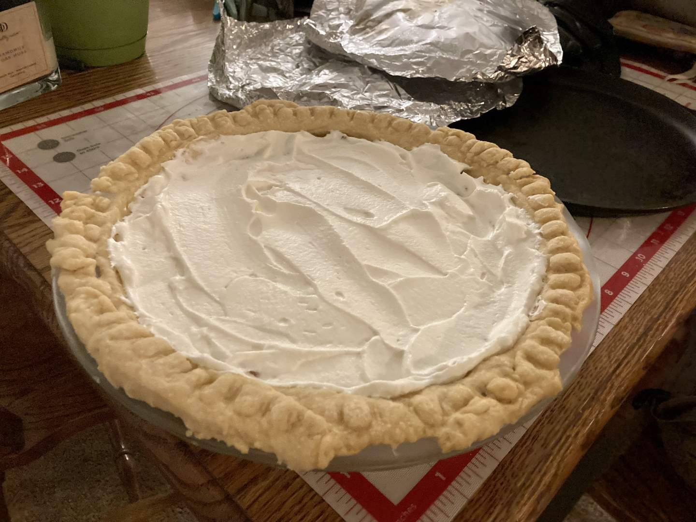
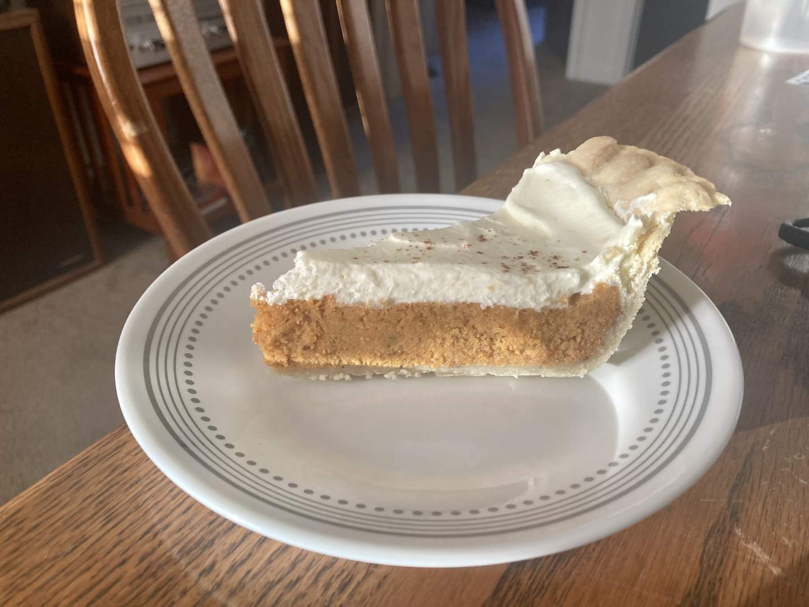

Pie 21: Persimmon
2023-11-12Filling recipe is from page 123 of Cy Littlebee’s Guide to Cooking Fish & Game (MDC).
Crust recipe from Tastes Better From Scratch.
Taste:
Difficulty:
Vibes:
Suggested pairing: an entire Friendsgiving meal
The common persimmon (Diospyros virginiana) is one of the most overlooked and underrated trees of the southeastern forest. Maples, oaks, and walnuts suck up most of the love--but I have always had a special place in my heart for this generous fruit-bearer. The wood of the tree is strong, heavy, and suitable for woodworking. In fact, the common persimmon is a species that produces ebony heartwood, though not for many decades.
But for all the traditional value of the wood, it was the fruit that drew me years ago to the persimmon. The fruit so beloved of possums, children, and gods (hence the name ‘διοσπυρος’) was enticing to me both in its astringent summer and sweet fall forms. I thought the drying sensation it generated in my mouth was great fun even if I spit out bites. Young Ben had no idea how deep the persimmon lore goes.
In September I noticed that behind our apartment complex’s laundry facility stands a persimmon tree which was at that time loaded with ripe fruit. I picked some and spent several hours trying to extract the pulp. I washed, peeled, de-seeded, and more but ended with a tiny amount of pulp and a huge mess. About a few hours later I learned that persimmon mash dries into a sticky and black-flecked mess that is rather difficult to clean. This is why we didn’t post a persimmon pie in September.
Fast-forward to last Sunday. Katie Beth was planning to prepare a dish of baked macaroni and cheese for a Friendsgiving dinner. I decided to try again with the persimmons, thinking a new technique I found on Youtube would be helpful. Additionally, there had been a hard frost since my first attempt, which softened the persimmons and significantly reduced their astringency. (This is bletting, not ripening.) I eventually collected many more persimmons than in September since I knew the pulp yield would be low. A recipe from an old cookbook was my guide and it called for a pint.
I dropped all the persimmons in a large mated colander and squished them aggressively against the sides with a glass jar. I was intent on not letting any porous materials touch the persimmon mash this time. Once one pint of pulp had come off the seeds, I heated it with a cup of milk and 1.25 cups of sugar. The mixture quickly congealed into a dense paste that had nothing in common with the normal texture of raw pumpkin pie filling. I was concerned but nevertheless continued by preparing and decorating a crust.
After spooning (not pouring) the paste into the pie shell, I baked them at 400 F for 15 minutes and then 350 F until the internal temperature was 180 F throughout. During this period I fully grasped the effect of my foolish choice of a recipe so ancient it didn’t list oven temperature or cook time! I came up with the above instructions on my own and have no idea if they were any good.
That horrible recipe called for a meringue but I ignored it and whipped up some cream, then spread it over the cooked and cooled pie (which looked hardly different post-bake, save for some puddles of fruit juice on the surface).

With substantial trepidation we took this pie (and KB’s wonderful baked mac and cheese) to the Friendsgiving dinner. Reactions were mixed. Most people liked the unique flavor, but amost everyone found the mealy-to-grassy texture and astringency so off-putting as to prevent them from finishing a slice.
Overall, this was the most work I have put into any pie yet. It was not the absolute worst we have made, but it was close. I place a lot of the blame on my choice to use such an old and unreviewed recipe. Next fall I intend to collect more persimmons and try again with a modern recipe that calls for less fruit pulp, more eggs, and more cream. Bletted persimmons have a legitimately delicious flavor but they have to be handled right to prevent a textural disaster. Better luck next time.
